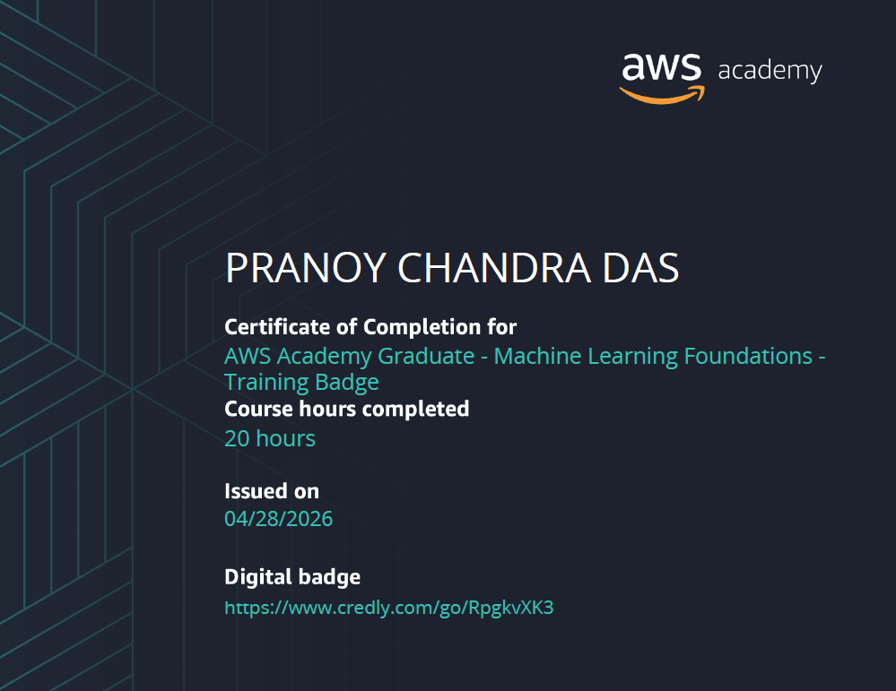

A passionate Software Engineer.
Hi, I'm Pranoy Chandra Das, a Software Engineering student at Daffodil International University with a strong passion for Artificial Intelligence, Machine Learning and Data Science. I enjoy transforming ideas into practical solutions through code and research. My interests include Deepfake Detection, Natural Language Processing (NLP), Computer Vision and Explainable AI (XAI). I believe technology should not only be intelligent but also transparent and impactful. Beyond academics, I continuously explore new technologies, build real-world projects, contribute to GitHub and challenge myself to learn something new every day. My goal is to develop AI systems that solve meaningful problems and create a positive impact on society.
A Machine Learning web application that automatically detects whether a Bangla news article is Real or Fake. Users can input text or upload CSV files for batch analysis. It shows confidence scores, probability charts, history tracking and explanations for why the model made its decision.
Automatic Helmet Detection System for Traffic Control.
Student Performance Monitoring System
Hotel_Management_System
Currently pursuing a Bachelor of Science in Software Engineering with a major in Data Science. Passionate about Artificial Intelligence (AI), Machine Learning (ML), Natural Language Processing (NLP), SQL and Deepfake Detection research.
Completed Higher Secondary Education in Science group with a focus on Physics, Chemistry, Mathematics and Biology/Computer Science.
Completed Secondary School Education in Science group with a strong foundation in Mathematics, Physics, Chemistry and Biology.
